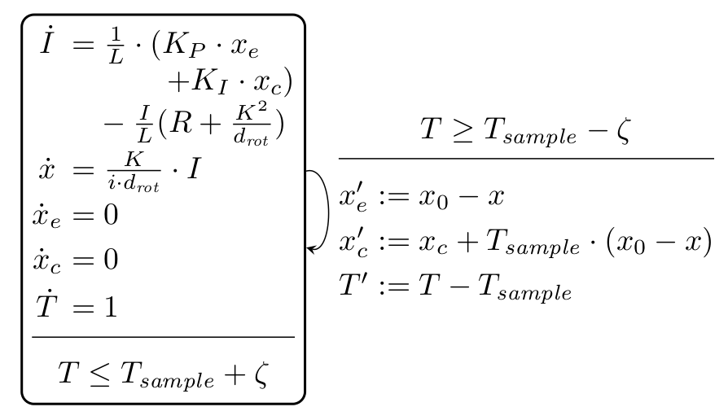

Electromechanical brake
System type: Linear clocked hybrid system
State dimension: 4
Application domain: Mechanical engineering
Model description
This system models an electromechanical brake, which works as in the following image.

The system is described by linear differential equations:
\[\begin{aligned} \dot{x}(t) &= Ax(t) + Bu(t),\qquad u(t) ∈ \mathcal{U} \\ y(t) &= Cx(t) \end{aligned}\]
A hybrid-automaton model is depicted below.

There are two versions of this benchmark:
Time-varying inputs: The inputs can change arbitrarily over time: $\forall t: u(t) ∈ \mathcal{U}$.
Constant inputs: The inputs are only uncertain in the initial value, and constant over time: $u(0) ∈ \mathcal{U}$, $\dot{u}(t) = 0.$
using ReachabilityAnalysis, SparseArraysCommon functionality between model variants
The following code is shared between all model variants.
function embrake_common(; A, Tsample, ζ, x0)
# continuous system
EMbrake = @system(x' = A * x)
# initial condition
X₀ = Singleton([0.0, 0, 0, 0])
# reset map
Ar = sparse([1, 2, 3, 4, 4], [1, 2, 2, 2, 4], [1.0, 1.0, -1.0, -Tsample, 1.0], 4, 4)
br = sparsevec([3, 4], [x0, Tsample * x0], 4)
reset_map(X) = Ar * X + br
# hybrid system with clocked affine dynamics
ha = HACLD1(EMbrake, reset_map, Tsample, ζ)
return IVP(ha, X₀)
end;Fixed parameters
The model without parameter variation is defined below.
function embrake_no_pv(; Tsample=1.E-4, ζ=1e-6, x0=0.05)
# model's constants
L = 1.e-3
KP = 10000.0
KI = 1000.0
R = 0.5
K = 0.02
drot = 0.1
i = 113.1167
# state variables: [I, x, xe, xc]
A = Matrix([-(R + K^2 / drot)/L 0 KP/L KI/L;
K / i/drot 0 0 0;
0 0 0 0;
0 0 0 0])
return embrake_common(; A=A, Tsample=Tsample, ζ=ζ, x0=x0)
end;Parameter variation
The model with parameter variation described below consists of changing only one coefficient, which corresponds to the Flow* settings in Strathmann and Oehlerking [SO15].
function embrake_pv_1(; Tsample=1.E-4, ζ=1e-6, Δ=3.0, x0=0.05)
# model's constants
L = 1.e-3
KP = 10000.0
KI = 1000.0
R = 0.5
K = 0.02
drot = 0.1
i = 113.1167
p = 504.0 + (-Δ .. Δ)
# state variables: [I, x, xe, xc]
A = IntervalMatrix([-p 0 KP/L KI/L;
K / i/drot 0 0 0;
0 0 0 0;
0 0 0 0])
return embrake_common(; A=A, Tsample=Tsample, ζ=ζ, x0=x0)
end;Extended parameter variation
In the following model, considered in Strathmann and Oehlerking [SO15], we vary all constants by χ% with respect to their nominal values. The variation percentage defaults to 5%.
function embrake_pv_2(; Tsample=1.E-4, ζ=1e-6, x0=0.05, χ=5.0)
# model's constants
Δ = -χ / 100 .. χ / 100
L = 1.e-3 * (1 + Δ)
KP = 10000.0 * (1 + Δ)
KI = 1000.0 * (1 + Δ)
R = 0.5 * (1 + Δ)
K = 0.02 * (1 + Δ)
drot = 0.1 * (1 + Δ)
i = 113.1167 * (1 + Δ)
# state variables: [I, x, xe, xc]
A = IntervalMatrix([-(R + K^2 / drot)/L 0 KP/L KI/L;
K / i/drot 0 0 0;
0 0 0 0;
0 0 0 0])
return embrake_common(; A=A, Tsample=Tsample, ζ=ζ, x0=x0)
end;